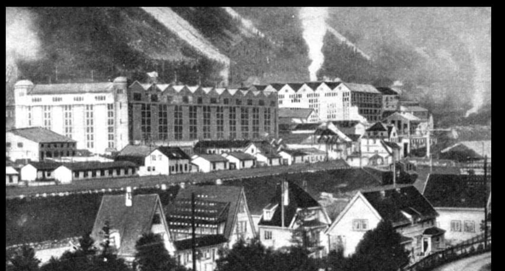
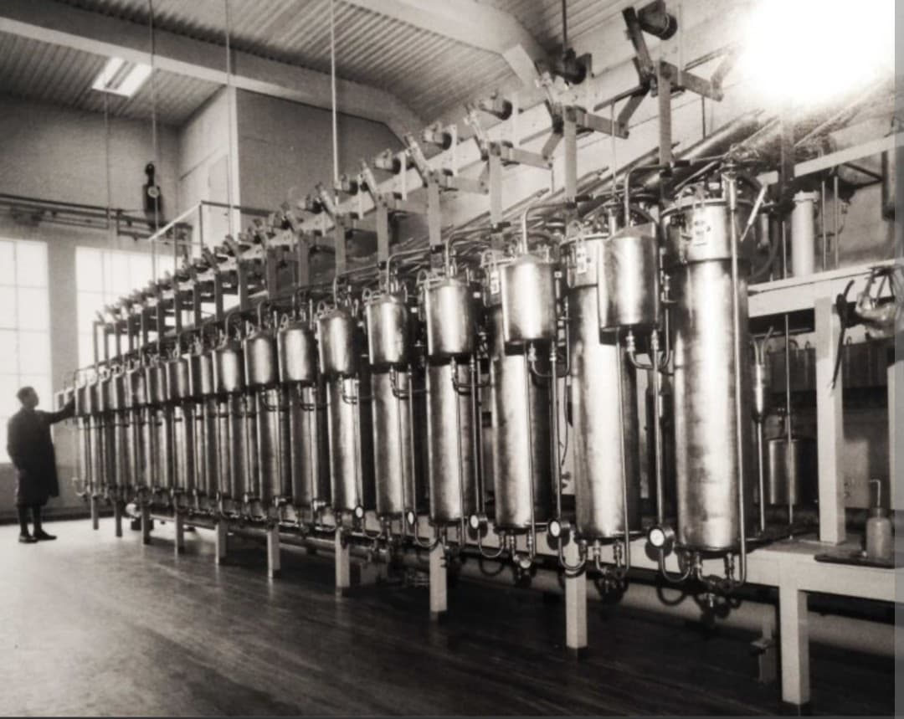
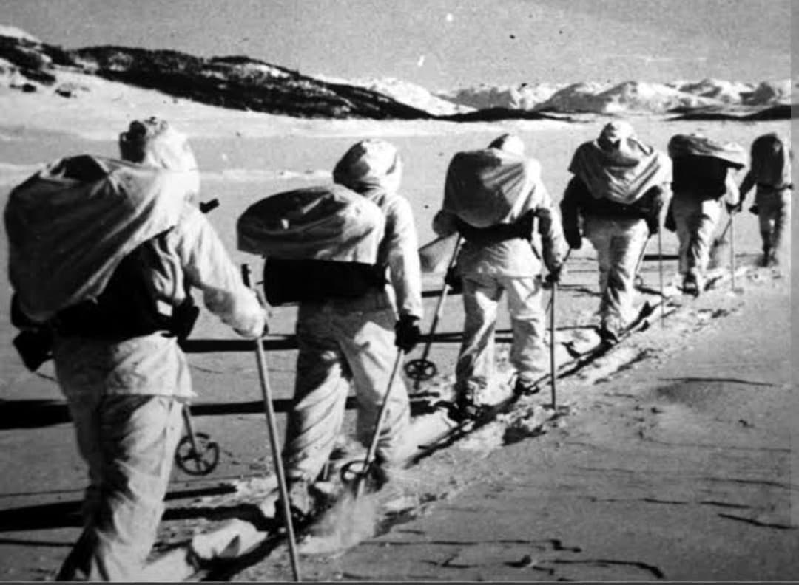
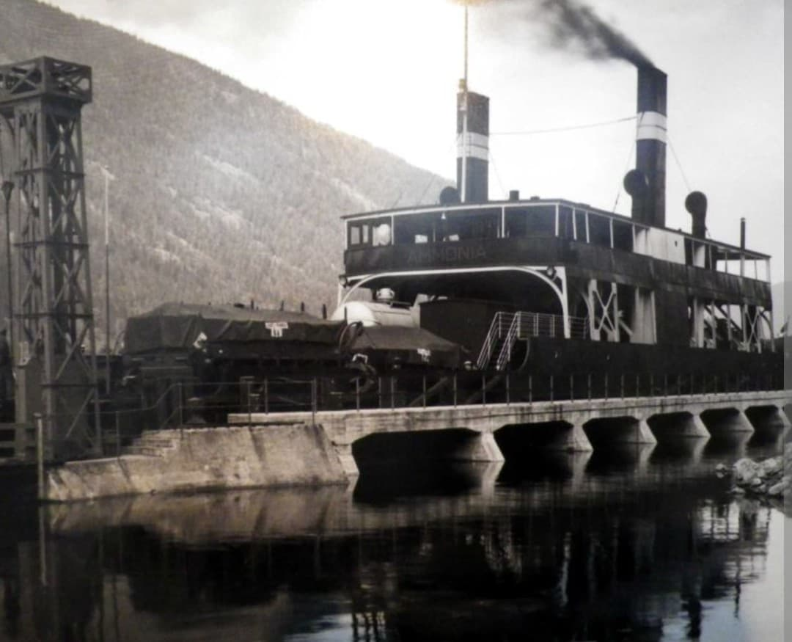

L’eau lourde produite à l’usine de Vemork, en Norvège, est au cœur d’une des opérations les plus discrètes et décisives de la Seconde Guerre mondiale. Derrière ce terme technique se cache une lutte silencieuse entre le programme nucléaire nazi et les Alliés, menée par une poignée de commandos norvégiens dans la neige et la nuit.

L’eau lourde (D₂O) est une forme particulière d’eau où l’hydrogène est remplacé par du deutérium, un isotope plus lourd. Elle possède des propriétés nucléaires qui la rendent utile comme modérateur de neutrons dans un réacteur. Dans les années 1930–1940, elle est considérée comme un élément clé pour tenter de développer une bombe atomique.
L’usine de Vemork, exploitée par Norsk Hydro, est alors le seul site au monde capable de produire de l’eau lourde à l’échelle industrielle.

Après la découverte de la fission de l’uranium, le régime nazi lance un programme secret, l’Uranverein, pour explorer la possibilité d’une arme atomique. Les chercheurs allemands envisagent d’utiliser l’eau lourde comme modérateur dans leurs expériences de réacteur.
Lorsque l’Allemagne envahit la Norvège en 1940, elle prend le contrôle de l’usine de Vemork et de sa production d’eau lourde. Les Alliés comprennent rapidement que ce site devient un objectif stratégique majeur.

En octobre 1942, une première équipe norvégienne est parachutée sur le plateau au-dessus de Vemork pour préparer le terrain : c’est l’opération Grouse. En novembre, l’opération Freshman tente d’envoyer des commandos britanniques en planeur. Les planeurs s’écrasent, les survivants sont capturés et exécutés : un échec tragique.
Dans la nuit du 27 au 28 février 1943, neuf commandos norvégiens infiltrent l’usine de Vemork. Ils posent des charges explosives sur les installations d’eau lourde et détruisent la production. Aucun coup de feu n’est tiré : c’est l’un des actes de résistance les plus efficaces de la guerre.
En février 1944, les nazis tentent d’envoyer les stocks restants en Allemagne. Les résistants coulent le ferry SF Hydro dans le lac Tinn, détruisant définitivement la cargaison.

Les sabotages de Vemork retardent fortement les recherches nucléaires allemandes. Combinés à des difficultés techniques et à un manque de coordination, ils empêchent l’Allemagne nazie de mettre au point une bombe atomique avant la fin de la guerre.
Aujourd’hui, le site de Vemork abrite un musée industriel et de la résistance.